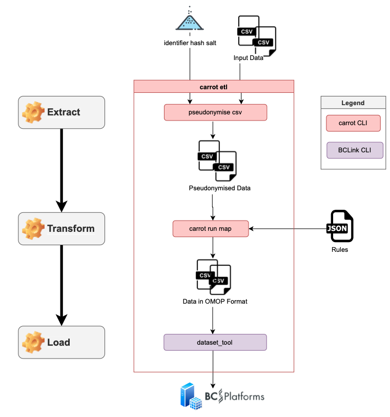

Part 1 Introduction
What is CO-CONNECT Tools?¶
carrot.cdm is a software package. The main component is the `carrot.module that contains python classes and tools for:
- Common Data Model
- Health Data Elements (person, condition_occurence...)
- I/O
- Command Line Interface
- Various Tools

What are the Health Data Elements ?¶
Classes for controlling and handling the building of elements such as the person table.
from carrot.cdm.objects import Person
Person
person = Person()
person.get_field_names()
person.get_field_dtypes()
import pandas as pd
import numpy as np
def build_person(self):
n = 10
self.person_id.series = pd.Series((i for i in range (n)))
self.gender_concept_id.series = pd.Series(np.random.choice([8507,8532],size=n))
self.birth_datetime.series = pd.Series(np.random.choice(['1970-01-01','1990-01-01'],size=n))
person.define = build_person
person.get_df(force_rebuild=True)
What do you mean by I/O ?¶
Various helper classes for data collections that control the Input/Output
from carrot.io import LocalDataCollection, SqlDataCollection, BCLinkDataCollection
LocalDataCollection, SqlDataCollection, BCLinkDataCollection
A LocalDataCollection can be used to load local csv files
local = LocalDataCollection({'Demographics.csv':'../data/part1/Demographics.csv'},nrows=10,chunksize=5)
local
local['Demographics.csv']
local.next()
local['Demographics.csv']
local.reset()
A BCLinkDataCollection is used to interact with BCLink (for either I/O)
bclink = BCLinkDataCollection({'dry_run':True,'tables':{'person':'ds1000','observation':'ds10002'}},
output_folder='cache')
bclink.bclink_helpers.get_table_map()
bclink.bclink_helpers.check_table_exists('person')
Example, create an indexing map by retrieving the last index of the table currently in BCLink:
bclink.load_indexing()
What are the tools?¶
Lots of different features, mostly helper functions used throughout the code
For example, loading a json rules file:
from IPython.display import SVG, display
from carrot.tools import load_json,make_dag
rules = load_json('../data/rules.json')
def show_svg():
return display(SVG(make_dag(rules['cdm'])))
show_svg()
from carrot.tools import remove_missing_sources_from_rules
filtered_rules = remove_missing_sources_from_rules(rules,local.keys())
filtered_rules
What is the CommonDataModel ?¶
The python class that controls everything when building a common data model
from carrot.cdm import CommonDataModel
CommonDataModel
cdm = CommonDataModel.from_rules(filtered_rules,inputs=local,outputs=bclink)
cdm.process()
cdm['person'].dropna(axis=1)